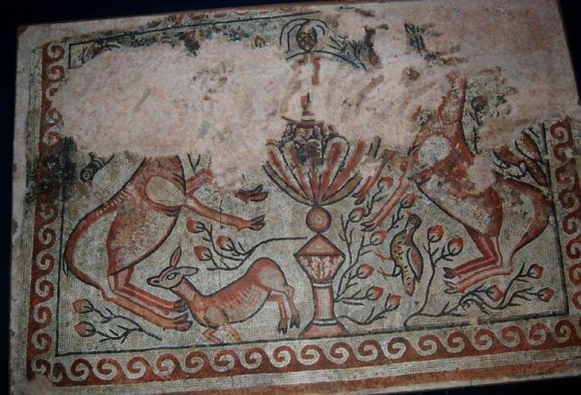
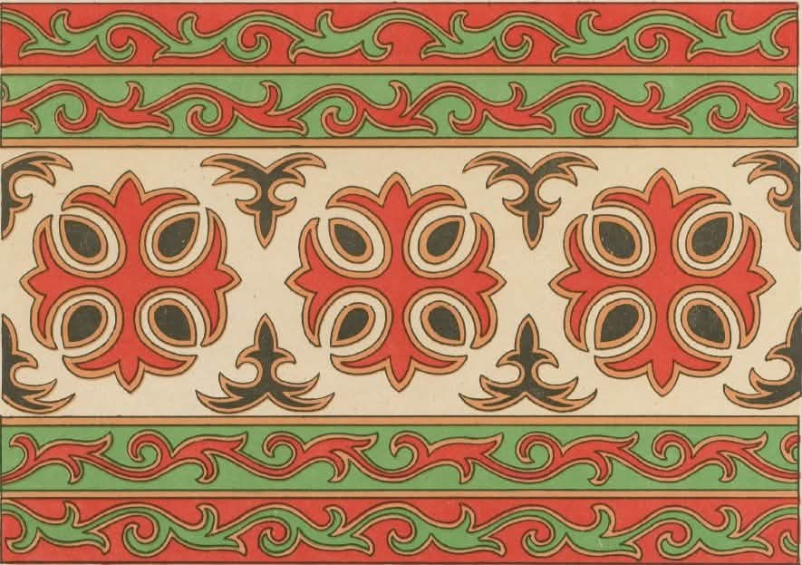

საქართველოს კულტურული მემკვიდრეობა საუკუნეების მანძილზე იქმნებოდა და მასში განსაკუთრებული ადგილი უკავია როგორც მონუმენტურ ფერწერას, ისე დეკორატიულ ხელოვნებას. ამ მდიდარი ისტორიის ორ გამორჩეულ ნიმუშს წარმოადგენს უძველესი ბიჭვინთის მოზაიკა და ქართული ტრადიციული წნული ორნამენტი. მიუხედავად იმისა, რომ ისინი სხვადასხვა ეპოქასა და მასალას მიეკუთვნებიან, ორივე მათგანში იკითხება ქრისტიანული სიმბოლიკისა და მარადისობისკენ სწრაფვის იდეა.
მარადისობის ფერები: რას გვიყვება ბიჭვინთის უძველესი მოზაიკა?

საქართველოში მოზაიკური ხელოვნების არაერთი უნიკალური ნიმუშია აღმოჩენილი, თუმცა მათ შორის ყველაზე შთამბეჭდავი და მნიშვნელოვანი ძეგლი ბიჭვინთის ტაძრის მოზაიკური იატაკია.
ეს ხელოვნების ნიმუში სამნავიან ბაზილიკაში აღმოაჩინეს, თუმცა, როგორც გაირკვა, ის თავად ამ ტაძარს კი არა, მის ქვეშ არსებულ, კიდევ უფრო ძველ სალოცავს ეკუთვნოდა. მიუხედავად იმისა, რომ იატაკის ნაწილი განადგურებულია, შემორჩენილი ფრაგმენტები სრულიად საკმარისია იმისათვის, რომ VI საუკუნის ოსტატების გენიალურობა დავინახოთ.
ფერებით დაწერილი სიმბოლოები
ბიჭვინთის მოზაიკა არ არის უბრალოდ ლამაზი ორნამენტი — ის ადრექრისტიანული სიმბოლოების ცოცხალი ენაა. იატაკი დაყოფილია ჩუქურთმიან სექტორებად, სადაც თითოეულ დეტალს თავისი საიდუმლო დატვირთვა აქვს:
ალფა და ომეგა
საკურთხევლის ცენტრში, ქრისტეს მონოგრამის გვერდით, ბერძნული ანბანის პირველი და ბოლო ასოებია გამოსახული, რაც უფლის სიტყვებს ეხმიანება: "მე ვარ ალფა და ომეგა... დასაწყისი და დასასრული".
ხოხბები და ბროწეული
ფრინველები მორწმუნეთა სულებს განასახიერებენ, ხოლო ბროწეული ქრისტიანულ ტრადიციაში ზიარების სიმბოლოა.
ძროხა და ხბო
ეს გამოსახულება სხვა მსგავს ძეგლებში არ გვხვდება და მკვლევარები მიიჩნევენ, რომ ის უშუალოდ ადგილობრივი, ქართული ტრადიციების გამოძახილია.
„სიცოცხლის შადრევანი“
მოზაიკის ყველაზე ცნობილი და გამორჩეული ნაწილი აღმოსავლეთ კედელთან მდებარე კომპოზიციაა — „სიცოცხლის შადრევანი“. წარმოიდგინეთ მაღალი, ულამაზესი ჭურჭელი, საიდანაც უხვად გადმოდის ლურჯი წყალი. შადრევნისკენ მიმართულნი არიან ირმები (ხარ-ირემი და ფურ-ირემი შვლით) და ფრინველები. ეს სცენა ნათლისღებასა და სამოთხეს განასახიერებს — სულს, რომელიც ისევე მიელტვის უფალს, როგორც მოსწყურებული ირემი წყაროს.
ოსტატობა და ელინისტური ტრადიციები
განსაკუთრებით კარგადაა შემონახული ტაძრის სანათლავის (ნართექსის) ნაწილი. აქ ვხვდებით ჯვრებს, თევზებს, ფარშევანგებსა და ოქროსფერ ლარნაკს, რომელზეც სინათლის ათინათი ისეთი ოსტატობითაა დატანებული, რომ გამოსახულება მოცულობითი, სამგანზომილებიანი ჩანს. წყლის კაშკაშა ლურჯი ფერი, ფრინველების ვარდისფერი და ყვითელი ტონები მათ წითელ ნისკარტებთან ერთად საოცრად მდიდარ ფერთა გამას ქმნის. აშკარაა, რომ VI საუკუნის დასაწყისში შექმნილი ეს შედევრი უაღრესად ნიჭიერი ოსტატების ნახელავია, რომლებმაც იდეალურად შეუხამეს ერთმანეთს ელინისტური (ბერძნული), აღმოსავლეთ-ქრისტიანული და ადგილობრივი ტრადიციები.
წყარო:saunje.ge ბიჭვინთის მოზაიკა - ი.ციციშვილი
ქართული ტრადიციული ორნამენტი – მარადისობის წნული

ბიჭვინთის "მარადისობის წნული" უკავშირდება მსოფლიო მნიშვნელობის ძეგლს — ბიჭვინთის მოზაიკას.აი, რა უნდა იცოდეთ ამ უნიკალური ორნამენტის შესახებ:
რა არის "ბიჭვინთის წნული"?
ეს არის IV-V საუკუნეების ბიჭვინთის ტაძრის იატაკის მოზაიკის გეომეტრიული ჩარჩო. ორნამენტი წარმოადგენს ე.წ. "უსასრულო კვანძს" ან "წნულს" (Guilloche), რომელიც შედგება გადაჯაჭვული, ფერადი (ხშირად წითელი, ყვითელი, შავი და თეთრი) ზოლებისგან. მას არ აქვს არც დასაწყისი და არც დასასრული.
სიმბოლური მნიშვნელობა
ქრისტიანულ იკონოგრაფიაში ეს განუწყვეტელი წნული სიმბოლურად გამოხატავს:
მარადისობა
ღვთიური სამყაროს უსასრულობას.
უკვდავებას
სულის მარადიულ სიცოცხლეს (ხშირად ეს წნული გარს ერტყა "სიცოცხლის წყაროს" ან ფრინველების გამოსახულებებს).
სად ინახება ორიგინალი?
ბიჭვინთის ტაძრის მოზაიკის უნიკალური ფრაგმენტები, მათ შორის ეს "მარადისობის წნულები", დაცულია საქართველოს ეროვნულ მუზეუმში (ხელოვნების მუზეუმი).